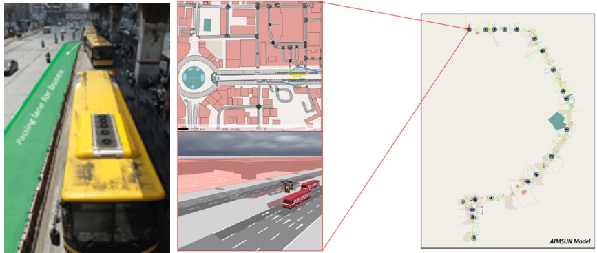

Publications

Assessing the Network Efficiency and Environmental Impact of the EDSA Busway under Transport and Traffic Measures: A Microsimulation and Mobile Crowdsourcing Approach
Journal of the Eastern Asia Society for Transportation Studies
Paper Link / DOI
Optimizing Route-based Fleet Size Computation through Network-Based Modeling for Puerto Princesa City, Philippines
Proceedings of the 31st Annual Conference of the Transportation Science Society of the Philippines
Paper Link / DOI
A Microsimulation Model of An Exclusive Bus Lane: The Case of EDSA Busway
Philippine Transportation Journal
Paper Link / DOI
Evaluating the Fuel Efficiency and Eco-Driving Potential of the EDSA Carousel
Philippine Transportation Journal
Paper Link / DOI